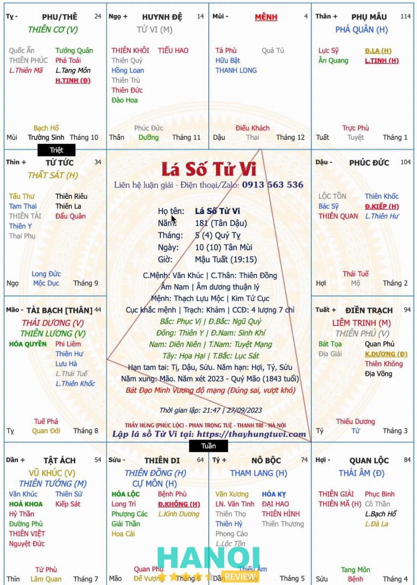
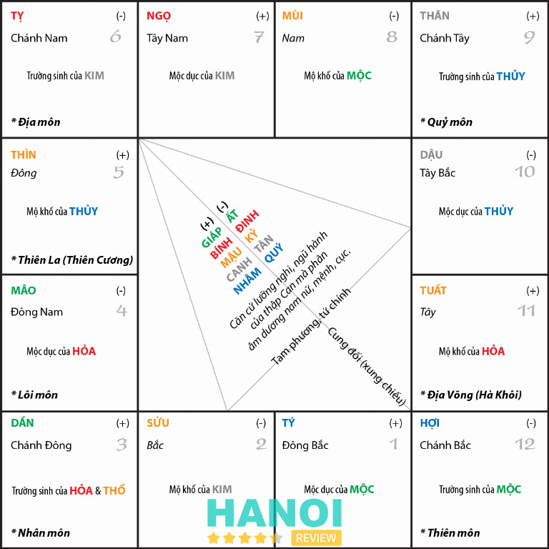
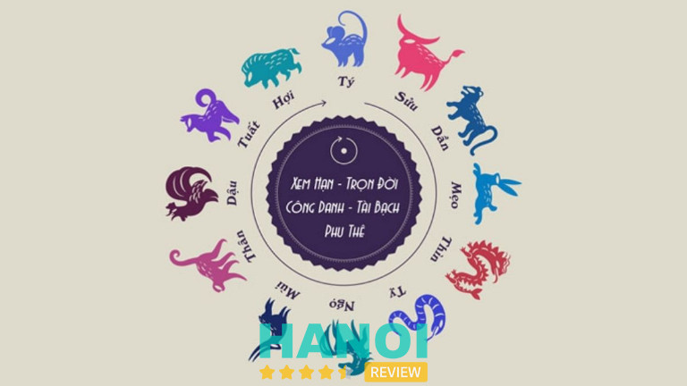
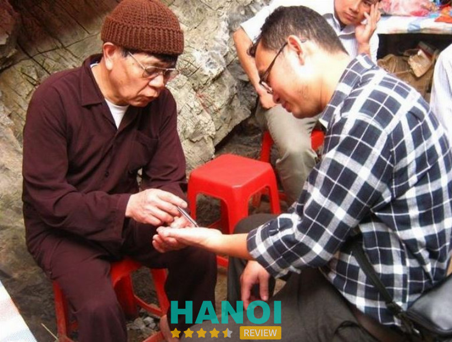
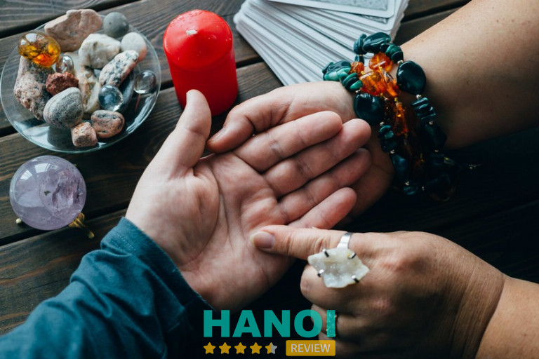

14 địa chỉ xem tử vi ở Hà Nội chuẩn nhất, nhiều người tới coi
Tìm địa chỉ xem tử vi ở Hà Nội uy tín là nhu cầu của nhiều người mong muốn hiểu rõ vận mệnh, công danh, sự nghiệp. Các thầy tử vi giỏi với kinh nghiệm sâu rộng giúp phân tích lá số chi tiết, đưa ra dự đoán chính xác. Nhiều người đã tìm đến để khám phá tương lai và định hướng cuộc sống tốt hơn.
Top 14 địa chỉ xem tử vi tại Hà Nội chuẩn uy tín, chính xác
Nếu bạn đang tìm địa chỉ xem tử vi ở Hà Nội chuẩn, uy tín giúp nhiều người có định hướng rõ ràng về vận mệnh, công danh, tình duyên, có thể tham khảo các địa chỉ được nhiều người tin tưởng sau:
Thầy Phúc Hùng – Chuyên Gia Tử Vi, Phong Thủy Uy Tín Tại Hà Nội
Thầy Phúc Hùng (Phúc Lộc) là người có hơn 10 năm kinh nghiệm luận giải lá số tử vi, được nhiều khách hàng trong và ngoài nước tin tưởng. Điểm nổi bật trong cách xem của Thầy là sự phân tích thấu đáo, rõ ràng, vừa dễ hiểu vừa đúng tinh thần nhân văn của tử vi – tuyệt đối không gieo sự lo lắng hay dọa dẫm.
Chi phí và hình thức xem
- Mức phí: từ 300.000đ – 1.000.000đ cho một lá số.
- Có thể xem trực tiếp tại Hà Nội hoặc xem online qua điện thoại/Zalo.
- Nhờ hỗ trợ xem từ xa, nhiều khách hàng ở tỉnh xa và Việt kiều cũng thường xuyên đặt lịch với Thầy.

Ưu điểm nổi bật
- Luận hạn chính xác: Thầy được đánh giá rất cao về độ chuẩn xác khi xem hạn.
- Tư vấn tận tình: Khách có thể hỏi thoải mái, không giới hạn số lượng câu hỏi.
- Cách giải thích dễ hiểu: Mọi vấn đề trong lá số được phân tích cặn kẽ, rõ ràng, ai cũng có thể nắm bắt.
- Hóa giải đơn giản: Thầy chỉ hướng dẫn những cách hóa giải thiết thực, dễ áp dụng, không tốn kém thêm.
Kiến thức phong thủy
Ngoài tử vi, Thầy Phúc Hùng còn am hiểu sâu về phong thủy. Nếu nhà cửa gặp vấn đề về hướng, bố cục hay phạm lỗi phong thủy, Thầy sẽ đưa ra phương án điều chỉnh hợp lý, dễ thực hiện trong đời sống.
Nhờ cách xem vừa chuẩn xác, vừa mang tính an tâm, Thầy Phúc Hùng ngày càng được nhiều người tin tưởng lựa chọn.
Thông tin liên hệ:
- Địa chỉ tại Hà Nội: Phan Trọng Tuệ (gần bệnh viện K Tân Triều), Thanh Trì, Hà Nội
- Địac hỉ tại TP. Hồ Chí Minh: Khu đô thị Hà Đô, Quận 10, TP. Hồ Chí Minh
- Số điện thoại: 0913 563 536
- Website của Thầy để lập lá số: thayhungtuvi.com / thayphucloc.com (Trên website có phần luận giải tự động và miễn phí, tuy nhiên chỉ mang tính tham khảo, không chính xác như khi được Thầy luận)
Thầy Thắm
Nằm trong danh sách những thầy tử vi được đánh giá cao tại Hà Nội, thầy Thắm nổi bật bởi cách xem chân thật, chi tiết và có căn cứ rõ ràng. Thầy có nhiều năm kinh nghiệm trong chấm lá số tử vi, xem bài tây và xem chỉ tay, giúp người xem nắm bắt vận hạn, thời vận tốt – xấu để chủ động hơn trong cuộc sống.
Thầy Thắm được nhiều người yêu mến không chỉ vì sự chuẩn xác trong lời luận mà còn bởi tấm lòng nhân hậu, thường giúp đỡ và xem miễn phí cho những ai có hoàn cảnh khó khăn. Mỗi buổi xem với thầy không chỉ là giải mã lá số, mà còn là cơ hội để người xem được lắng nghe những lời khuyên chân thành, thực tế, giúp họ tự tin hơn trên hành trình của mình.
Thông tin liên hệ:
- Địa chỉ: 60 Nguyễn Hoàng, Nam Từ Liêm, Hà Nội
- Số điện thoại/zalo: 0356 825 034
- Giá xem: 300.000đ – 500.000đ (tuỳ thời điểm trong năm)
Cô Nhàn
Nếu bạn quan tâm đến tử vi kết hợp yếu tố tâm linh, cô Nhàn là địa chỉ được nhiều người tìm đến ở Hà Nội. Cô có khả năng xem bài tây, chỉ tay và chấm lá số tử vi, đồng thời soi vong theo, gửi âm phần thờ cúng và cầu an cho gia đạo.
Với kinh nghiệm lâu năm cùng sự am hiểu về phong thủy – tâm linh, cô Nhàn giúp nhiều gia đình hóa giải âm phần, trấn trạch, cầu bình an và tài lộc. Những lời luận của cô được đánh giá là linh nghiệm, có căn cứ, giúp người xem hiểu nguyên nhân của các trở ngại trong cuộc sống và tìm ra cách hóa giải hiệu quả, mang lại sự yên ổn và hanh thông cho gia chủ.

Thông tin liên hệ:
- Địa chỉ: Ngõ 4 Hàm Nghi, P. Mỹ Đình 2, Q. Nam Từ Liêm, TP. Hà Nội
- Điện thoại/Zalo: 0908 504 015
- Giá xem: 200.000đ/lần (áp dụng mọi thời điểm)
Cô Hồng
Trong giới xem tử vi tại Hà Nội, cô Hồng là cái tên được nhiều người nhắc đến nhờ khả năng luận giải vận mệnh và tình duyên rất chuẩn xác. Cô am hiểu sâu về lá số tử vi, tướng số, xem chỉ tay và bài tây, giúp người xem hiểu rõ điểm mạnh – yếu trong bản mệnh của mình.
Đặc biệt, cô Hồng có duyên trong việc giải duyên âm, hóa giải trắc trở tình cảm và định hướng hôn nhân, phù hợp cho những ai đang gặp vướng mắc về chuyện tình duyên hoặc muốn tìm hướng phát triển mới trong cuộc sống. Với phong cách nhẹ nhàng, điềm tĩnh và cách nói có lý có tình, cô giúp người xem cảm thấy an tâm, tìm lại cân bằng và may mắn cho tương lai.

Thông tin liên hệ:
- Địa chỉ: Ngõ 149 Nguyễn Tuân, P. Thanh Xuân Trung, Q. Thanh Xuân, TP. Hà Nội
- Số điện thoại: 0777 692 035
- Giá xem: 200.000đ – 300.000đ (tuỳ thời điểm)
Cô Thúy
Trong số những địa chỉ xem tử vi ở Hà Nội được nhiều người đánh giá cao, Cô Thúy là một cái tên nổi bật. Với nhiều năm kinh nghiệm, cô có khả năng luận giải vận mệnh qua bài Tây, giúp người xem hiểu rõ hơn về công việc, tài chính, tình duyên hay những biến động trong cuộc sống.
Không chỉ dừng lại ở việc xem bói bài, cô còn có năng lực đặc biệt trong việc soi phần âm, xem duyên âm và dự đoán các vấn đề liên quan đến đường tình cảm. Chính sự chuẩn xác trong những lời luận giải khiến nhiều người tìm đến, kể cả khách ở xa. Nhờ những chia sẻ thực tế, dễ hiểu, nhiều người đã tìm ra hướng đi đúng đắn hơn cho tương lai.
Một điểm đặc biệt khi đến xem là cô làm việc khá tỉ mỉ, dành thời gian phân tích kỹ lưỡng từng trường hợp. Vì vậy, thời gian chờ có thể lâu, nên tốt nhất nên đặt lịch trước để tránh phải đợi quá lâu. Cô chỉ tiếp khách từ 15h đến tối, không nhận quá nhiều lượt xem trong ngày.
Chi phí xem bói tùy tâm, không có mức giá cố định hay tình trạng ép buộc, tạo cảm giác thoải mái. Khách đến xem có thể tùy tâm gửi từ 50.000 đồng, 100.000 đồng, 200.000 đồng hoặc hơn, tùy vào khả năng tài chính và lòng thành. Không có tình trạng ép giá hay yêu cầu tiền bạc, tạo sự thoải mái cho khách khi đến xem.
Nhờ cách luận giải chính xác, phong cách thẳng thắn và không thương mại hóa, đây là địa chỉ đáng tin cậy cho những ai muốn tìm hiểu về vận mệnh và định hướng tương lai.
Thông tin liên hệ:
- Địa chỉ: 161 Khâm Thiên, Đống Đa, Hà Nội
- Điện thoại: 0948 248 886
Cô Yến Đền Lừ
Trong số những địa chỉ xem tử vi ở Hà Nội uy tín, Cô Yến Đền Lừ là một thầy xem tử vi lá số có tiếng, được nhiều người tìm đến. Cô sử dụng phương pháp luận giải dựa trên lá số tử vi kết hợp với quan sát quả cau, lá trầu, đưa ra nhận định chính xác về công danh, sự nghiệp, tình duyên và gia đạo.
Không giống nhiều nơi khác, cô không lập điện thờ cúng hay thực hiện nghi lễ mà chỉ tập trung vào phân tích lá số. Cách xem tuy đơn giản nhưng có chiều sâu, giúp người xem hiểu rõ vận hạn của bản thân. Nhiều người từng đến đây đều đánh giá cao sự chính xác, từ những thay đổi trong công việc đến chuyện tình cảm hay các vấn đề tâm linh trong gia đình.
Vì không nhận quá nhiều lượt xem trong ngày, cần đặt lịch trước để tránh chờ đợi lâu. Cô xem tại 27 Lô 6 Đền Lừ, với hình thức đặt lễ tùy tâm, không quy định mức phí cố định, tạo sự thoải mái cho khách.
Những ai đang tìm kiếm một địa chỉ xem tử vi lá số đáng tin cậy, không mang tính thương mại, có thể tham khảo địa chỉ này để hiểu rõ hơn về vận mệnh và định hướng cuộc sống.
Thông tin liên hệ:
- Địa chỉ: 27 Lô 6 Đền Lừ 2, Hoàng Văn Thụ, Hoàng Mai, Hà Nội
- Điện thoại: 0978 795 679
Anh Tùng
Anh Tùng, địa chỉ 210 Phú Viên – Bồ Đề – Long Biên, là một thầy phong thủy và tử vi có tiếng, chuyên xem bài Tây, tướng số, chỉ tay. Nhiều người tìm đến để giải mã vận mệnh, dự đoán tương lai, đặc biệt là những ai đang băn khoăn về đường tình duyên, sự nghiệp hay sức khỏe.
Ngoài xem bói, anh còn tư vấn phong thủy nhà ở, giúp gia chủ điều chỉnh không gian sống để thu hút tài lộc, hóa giải vận hạn. Với những ai có dự định phẫu thuật thẩm mỹ, anh có thể xem ngày giờ phù hợp, giúp quá trình diễn ra thuận lợi.
Phong cách xem của anh rất thẳng thắn, rõ ràng. Nếu cần làm lễ cúng để hóa giải vận xui, anh sẽ hướng dẫn cụ thể, nhưng không ép buộc. Người đến xem có thể an tâm vì không bị chèo kéo hay bắt buộc phải thực hiện nghi lễ nào nếu không cần thiết.
Việc đặt lễ hoàn toàn tùy tâm, nhưng nhiều người thường để khoảng 100.000 – 200.000 đồng. Nếu cần tư vấn về phong thủy, tử vi hoặc muốn chọn ngày tốt để thực hiện công việc quan trọng, có thể liên hệ qua số 0784 999 888 để sắp xếp lịch hẹn.
Thông tin liên hệ:
- Địa chỉ: 210 Phú Viên, Bồ Đề, Long Biên, Hà Nội
- Điện thoại: 0784 999 888
Cô Hằng Thiên
Tìm kiếm một địa chỉ xem tử vi, phong thủy, tướng số uy tín tại Hà Nội không hề đơn giản, đặc biệt khi cần dự đoán chính xác về đất đai, mồ mả hay tình duyên. Cô Hằng Thiên là một trong những thầy bói nổi tiếng, được nhiều người đánh giá cao nhờ sự tận tâm và am hiểu sâu rộng.
Nhiều người tìm đến cô Hằng Thiên để được tư vấn phong thủy nhà cửa, hướng đất phù hợp hoặc cách hóa giải vận hạn. Với kinh nghiệm lâu năm trong lĩnh vực tử vi, cô không chỉ luận giải chi tiết mà còn đưa ra những lời khuyên thiết thực giúp cải thiện vận mệnh. Đặc biệt, các vấn đề liên quan đến tình duyên, công danh hay sức khỏe đều được phân tích rõ ràng, giúp người xem có cái nhìn tổng quan và định hướng tốt hơn cho tương lai.
Mặc dù địa chỉ của cô nằm hơi xa trung tâm Hà Nội, lượng khách đến đây vẫn rất đông. Điều này cho thấy độ tin cậy và sự chính xác trong từng lời luận giải. Không chỉ người dân trong khu vực mà nhiều người từ các tỉnh thành khác cũng tìm đến để được cô tư vấn.
Nếu quan tâm đến tử vi, phong thủy hay tướng số, cô Hằng Thiên là một địa chỉ đáng để tham khảo. Việc tìm được thầy bói có tâm, am hiểu sâu sắc sẽ giúp mỗi người có cái nhìn đúng đắn hơn về vận mệnh và cách hóa giải những điều chưa tốt trong cuộc sống.
Thông tin liên hệ:
- Địa chỉ: Ngõ 71 Cộng Hòa, Ngãi Cầu, Hoài Đức, Hà Nội
- Điện thoại: 0977 179 008
- Facebook: fb.com/cohangthien
Thầy Minh
Xem tử vi giúp giải mã vận mệnh, định hướng tương lai và tìm ra giải pháp cho những khó khăn trong cuộc sống. Tại Hà Nội, thầy Minh được biết đến là một trong những chuyên gia hàng đầu trong lĩnh vực này, mang đến những phân tích sâu sắc và chính xác cho từng cá nhân.

Với nhiều năm kinh nghiệm, kiến thức uyên thâm cùng phương pháp luận giải khoa học, thầy Minh cung cấp những bài luận tử vi chi tiết dựa trên ngày, giờ sinh của mỗi người. Những phân tích này không chỉ giúp nắm bắt vận hạn, công danh, sự nghiệp mà còn hỗ trợ cải thiện phong thủy, hóa giải vận xấu và thu hút tài lộc.
Mỗi buổi xem tử vi đều dựa trên nền tảng kiến thức chuẩn mực về bát tự, kinh dịch và phong thủy, mang đến những thông tin hữu ích, dễ hiểu và thực tiễn. Rất nhiều người đã tìm được hướng đi phù hợp cho cuộc sống, công việc và tình duyên sau khi tham khảo lời khuyên từ thầy Minh.
Dịch vụ tử vi bao gồm: xem bát tự, luận đoán vận hạn, tư vấn phong thủy nhà ở, đặt tên hợp mệnh, xem ngày giờ tốt cho các sự kiện quan trọng. Đặc biệt, những phương pháp hóa giải vận xấu luôn dựa trên nguyên lý phong thủy chính thống, giúp mỗi người có thể tự điều chỉnh để cải thiện cuộc sống.
Để nhận tư vấn trực tiếp, có thể liên hệ ngay để đặt lịch hẹn. Địa chỉ dễ tìm, quy trình rõ ràng, tận tâm hỗ trợ giải đáp mọi thắc mắc liên quan đến tử vi và phong thủy. Một cuộc gặp gỡ có thể giúp thay đổi cuộc đời theo hướng tích cực hơn.
Thông tin liên hệ:
- Địa chỉ: Số 8, Ngõ 355/114, Xuân Đỉnh, Từ Liêm, Hà Nội
- Điện thoại: 0915 169 919
Thầy Tâm An
Xem bói tử vi từ lâu đã trở thành phương pháp giúp con người thấu hiểu vận mệnh, tìm hướng đi đúng đắn trong cuộc sống. Tại Hà Nội, thầy Tâm An được nhiều người biết đến nhờ kiến thức sâu rộng về tử vi, phong thủy và nhân tướng học.

Với nhiều năm kinh nghiệm, thầy giúp phân tích lá số tử vi một cách chi tiết, đưa ra lời khuyên thiết thực về công danh, sự nghiệp, tình duyên và sức khỏe. Nhờ phương pháp luận giải chính xác, nhiều người đã tìm thấy hướng đi phù hợp, vượt qua khó khăn trong cuộc sống.
Không chỉ xem tử vi, thầy còn hỗ trợ hóa giải vận hạn, cải thiện phong thủy nhà cửa, kích hoạt tài lộc. Sự tận tâm và chính xác trong từng lời luận giải đã giúp thầy nhận được sự tin tưởng từ nhiều người.
Nếu đang tìm kiếm một địa chỉ xem bói tử vi uy tín tại Hà Nội, hãy ghé qua để được tư vấn trực tiếp. Một lá số tử vi đúng đắn có thể giúp mỗi người hiểu rõ bản thân, định hướng tương lai và đón nhận những điều tốt đẹp phía trước.
Thông tin liên hệ:
- Địa chỉ: Số 19 Nguyễn Trãi, Khương Trung, Đống Đa, Hà Nội
- Điện thoại: 0947 731 565
Thầy Quang Lâm
Thầy Quang Lâm là một trong những chuyên gia hàng đầu về tử vi và phong thủy tại Hà Nội. Với nhiều năm kinh nghiệm, thầy được đánh giá cao nhờ sự chính xác và tận tâm trong từng lời tư vấn. Bất kể là công danh, sự nghiệp, tình duyên hay sức khỏe, thầy đều đưa ra những nhận định chi tiết giúp mỗi người tìm được hướng đi phù hợp.
Lịch làm việc của thầy từ 9h sáng đến 5h chiều, do đó, để tránh chờ đợi lâu, nên đặt lịch hẹn trước. Đầu năm và cuối năm là thời điểm lượng khách rất đông, vì vậy việc liên hệ sớm sẽ giúp tiết kiệm thời gian. Khi đến đây, có thể đặt câu hỏi về bất kỳ vấn đề nào liên quan đến cuộc sống, sự nghiệp hay gia đạo để nhận được lời khuyên hữu ích.
Bên cạnh việc xem bói tử vi, thầy Quang Lâm còn chế tạo các loại bùa hộ thân, bùa may mắn và bùa kinh doanh theo yêu cầu. Những vật phẩm này được nhiều người tin dùng nhằm thu hút tài lộc và hóa giải vận hạn. Nhờ uy tín và kinh nghiệm, thầy đã giúp nhiều người cải thiện vận mệnh và đạt được thành công trong cuộc sống.
Địa chỉ của thầy nằm ở Hà Nội, thuận tiện cho việc di chuyển. Nếu cần tư vấn phong thủy hoặc xem tử vi, nên chủ động liên hệ để được hỗ trợ tốt nhất.
Thông tin liên hệ:
- Địa chỉ: Số 7, Ngõ 262A Nguyễn Trãi, Thanh Xuân, Hà Nội
- Số điện thoại: 0921 116 262
- Website: tuviquanglam.com
Thầy Long
Tại Hà Nội, thầy Long là một trong những người có tiếng trong lĩnh vực xem bói. Với khả năng luận giải bài tây, xem tướng số và nhận định về âm phần, đất đai, thầy đã giúp nhiều người tháo gỡ khúc mắc trong cuộc sống.
Điều đặc biệt khi đến gặp thầy Long là không phải ai cũng được xem ngay. Những người có căn số thường được ưu tiên trước, trong khi những trường hợp khác có thể phải chờ lâu hơn. Nhờ sự tận tâm và am hiểu sâu sắc, thầy nhận được sự tín nhiệm của nhiều người.
Một điểm đáng chú ý là thầy không đặt nặng chuyện lễ lạt. Mọi người có thể biếu lễ tùy tâm, thậm chí thầy sẵn sàng giúp miễn phí nếu cần. Tuy nhiên, để tránh mất công đi lại, hãy liên hệ trước để biết lịch thầy có nhà hay không.
Nếu đang tìm kiếm một nơi xem bói đáng tin cậy tại Hà Nội, đây là địa chỉ rất đáng cân nhắc.
Thông tin liên hệ:
- Địa chỉ: Ngõ 46 Xuân Đỉnh, Tây Hồ, Hà Nội
- Điện thoại: 0984 133 133
- Facebook: fb.com/longluonggia79
Thầy Phúc Mẫn
Xem tử vi không chỉ là nghệ thuật dự đoán mà còn là sự kết hợp giữa khoa học và tâm linh, giúp mỗi người thấu hiểu vận mệnh, tìm ra hướng đi đúng đắn trong cuộc sống. Một trong những địa chỉ xem tử vi ở Hà Nội được nhiều người tin tưởng chính là Thầy Phúc Mẫn – người có khả năng ứng khẩu luận đoán chính xác, tận tâm tư vấn trên nhiều phương diện.

Sự khác biệt của Thầy Phúc Mẫn đến từ cơ duyên đặc biệt được bề trên ban cho, giúp luận giải lá số với độ chính xác cao. Những người từng trải nghiệm đều bất ngờ trước khả năng nhìn thấu quá khứ, phân tích hiện tại và dự đoán tương lai một cách chi tiết. Không chỉ xem tử vi về công danh, sự nghiệp, tình duyên, Thầy còn tư vấn phong thủy nhà ở, hướng bàn thờ, vị trí đặt bàn thờ phát tài, hỗ trợ lựa chọn thời điểm tốt để sinh con.
Dành trọn tâm huyết cho con đường tâm linh, Thầy Phúc Mẫn ăn chay trường và luôn hướng đến việc giúp đỡ những hoàn cảnh khó khăn. Với người không thể đến trực tiếp, Thầy còn cung cấp dịch vụ xem tử vi online tiện lợi. Đặc biệt, những ai gặp biến cố, bế tắc trong cuộc sống sẽ được hỗ trợ tận tình.
Sự uy tín của một địa chỉ xem tử vi Hà Nội không chỉ nằm ở khả năng luận đoán chính xác mà còn thể hiện qua tâm huyết và lòng hướng thiện. Với tâm nguyện giúp người, Thầy Phúc Mẫn không chỉ xem tử vi mà còn là người đồng hành, mang đến ánh sáng cho những ai đang tìm kiếm lối đi đúng trong cuộc đời.
Thông tin liên hệ:
- Địa chỉ: 231 Vũ Tông Phan, Khương Trung, Thanh Xuân, Hà Nội
- Điện thoại: 0936 252 636
Tử vi Dung Vũ
Tử Vi Dung Vũ là một trong những địa chỉ coi tử vi ở Hà Nội được nhiều người tìm đến khi muốn khám phá vận mệnh, tình duyên và sự nghiệp. Với sự am hiểu sâu rộng về tử vi và bài Tây, cô Dung Vũ mang đến những luận giải chính xác, giúp mỗi người có cái nhìn rõ ràng hơn về tương lai.
Mỗi buổi xem đều diễn ra trong không gian riêng tư, tạo cảm giác thoải mái để bạn dễ dàng chia sẻ những vấn đề đang gặp phải. Không chỉ tập trung vào lá số tử vi, cô Dung Vũ còn kết hợp với việc xem bài Tây và âm phần mồ mả để đưa ra những nhận định toàn diện. Cách tiếp cận này giúp cũng giúp bạn hiểu sâu hơn về vận mệnh và tìm được hướng đi phù hợp.
Với kinh nghiệm nhiều năm, khả năng phân tích sắc bén và phương pháp luận giải thực tế, mỗi lời khuyên đều mang tính ứng dụng cao. Bạn không chỉ nhận được thông tin về số mệnh mà còn có thêm định hướng cụ thể để cải thiện cuộc sống. Mức chi phí hợp lý, dao động từ 500.000 – 1.000.000 VNĐ/lá số, phù hợp với nhiều đối tượng.
Tìm kiếm một địa chỉ coi tử vi ở Hà Nội với độ chính xác cao và cách tiếp cận sâu sắc? Tử Vi Dung Vũ sẽ mang đến những giải đáp thỏa đáng, giúp từng người có sự chuẩn bị tốt hơn cho chặng đường phía trước.
Thông tin liên hệ:
- Địa chỉ: 176 Tổ 2 Đa Sỹ Kiến Hưng, Hà Đông, Hà Nội
- Số điện thoại: 0972 311 703
Tiêu chí chọn địa chỉ xem tử vi ở Hà Nội chất lượng
Tìm địa chỉ xem tử vi ở Hà Nội chất lượng giúp mỗi người hiểu rõ vận mệnh, công danh, tình duyên. Một nơi uy tín cần đáp ứng các tiêu chí quan trọng, giúp luận giải chính xác, mang đến lời khuyên hữu ích. Dưới đây là những tiêu chí quan trọng cần xem xét khi lựa chọn.
- Thầy tử vi có kinh nghiệm và uy tín: Kiến thức sâu về phong thủy, tứ trụ, bát tự, được nhiều người đánh giá cao, phản hồi tích cực, giúp xem tử vi chính xác, có cơ sở rõ ràng.
- Độ chính xác trong luận giải: Phân tích dựa trên nguyên lý tử vi chính thống, đưa ra dự đoán hợp lý, tránh phán đoán mơ hồ hoặc gây hoang mang, giúp người xem có định hướng tốt.
- Tư vấn rõ ràng, có tâm: Hướng dẫn cách cải thiện vận mệnh thay vì chỉ tập trung vào điềm xấu, không dụ dỗ mua vật phẩm phong thủy hay các dịch vụ không cần thiết.
- Địa điểm rõ ràng, dễ tìm: Có địa chỉ cụ thể, hoạt động minh bạch, tránh những nơi không có thông tin chính xác hoặc có dấu hiệu lừa đảo, giúp bạn yên tâm hơn.
- Phí xem hợp lý, không ép buộc: Mức phí minh bạch, không phát sinh chi phí vô lý, không bắt buộc khách phải cúng lễ hoặc mua đồ phong thủy với giá cao ngoài mong muốn.
- Phản hồi từ người xem trước: Được nhiều người giới thiệu, có danh tiếng tốt, đánh giá tích cực, giúp xác thực chất lượng, tạo sự tin tưởng trước khi quyết định đến xem tử vi.
Chọn địa chỉ xem tử vi ở Hà Nội phù hợp giúp mỗi người có định hướng rõ ràng trong cuộc sống. Với sự chính xác, uy tín và kinh nghiệm của thầy tử vi, nhiều người đã tìm thấy lời giải cho những băn khoăn trong vận mệnh. Nơi xem tử vi chuẩn mang đến góc nhìn sâu sắc, giúp cuộc sống thêm thuận lợi.
Có thể bạn quan tâm
- 5 Địa chỉ sơn xe ô tô tại Hà Nội chất lượng tốt, giá rẻ
- 10 Đơn vị lắp đặt camera tại Hà Nội uy tín, dịch vụ được đánh giá cao
- 10 Đại lý vé máy bay tại Hà Nội uy tín, giá rẻ đáng cân nhắc
- 10 Cửa hàng bán nhẫn cưới đẹp tại Hà Nội chất lượng, giá tốt
DOANH NGHIỆP: Đăng tải thông tin MIỄN PHÍ.
Bình luận (1)
Tin đọc nhiều


Bạn ơi! Cô Yên Đền Lừ – ko phải hình ảnh đấy bạn nhé! Bạn viết bài nên tìm hiểu kỹ. Đây là hình ảnh cô Yến Tứ Liên – Tây Hồ – Hà nội. Bạn nên sửa lại bài và có thông tin chính xác bạn nhé! Như này sẽ làm ảnh hưởng tới nhiều người. Vì hầu như mọi người tìm đến tâm linh vì họ không biết. Như này đang bị sai bạn nhé!